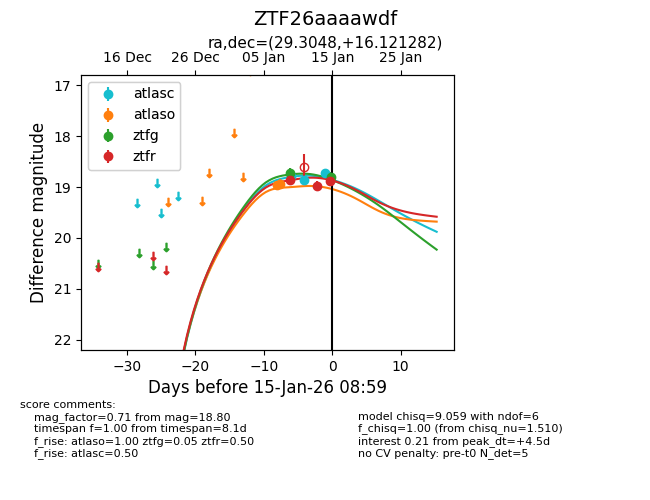
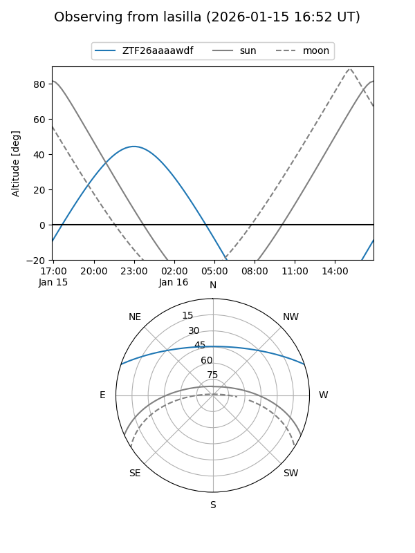
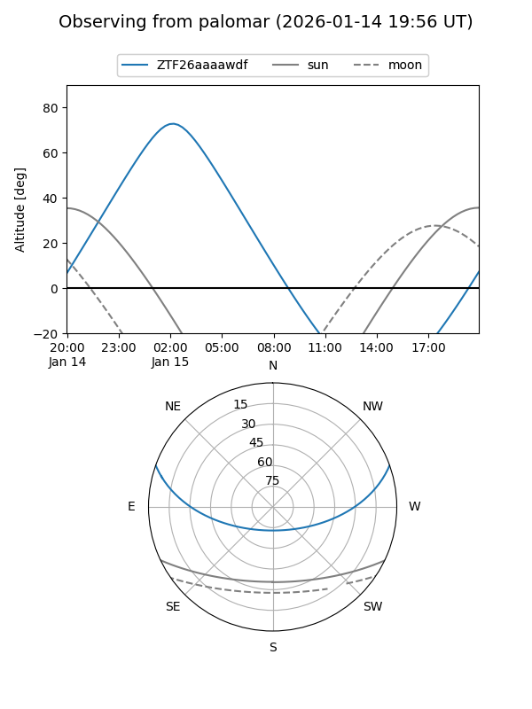
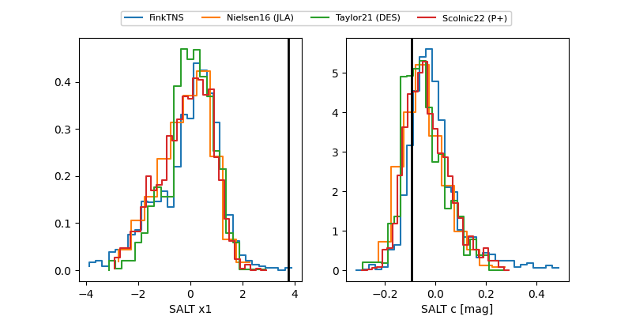

ZTF26aaaawdf
Target ZTF26aaaawdf at 2026-01-15 09:00
Aliases and brokers:
FINK: link
Lasair: link
ALeRCE: link
alt names
ZTF26aaaawdf (ztf,fink_ztf)
Coordinates:
equatorial (ra, dec) = 29.3048,+16.12128
equatorial (HMS+DMS) = 01:57:13.14,+16:07:16.61
galactic (l, b) = (145.1072,-43.89980)
Flags:
Photometry:
last atlasc=18.73, atlaso=18.94, ztfg=18.80, ztfr=18.87
3 atlasc, 2 atlaso, 2 ztfg, 3 ztfr detections
Lightcurve

Visibility


Additional plots
